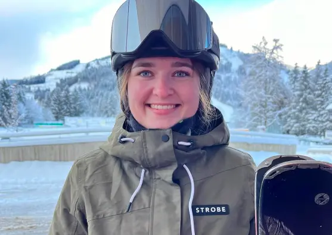

Om mig & CV
Hejsa! Jeg hedder Emma Færk Skontorp, 22, og jeg er igang med at tage uddannelsen multimediedesigner på KEA (Københavns erhvervsakademi). Det er først her på uddannelsen at mine interesser for design og de digitale programmer, endegyldigt har fået lov til at udfolde sig. Jeg har allerede nu lært mere end jeg turde drømme om.
Jeg har fået lov til at lave grafiske design, lave hjemmesider og det jeg elsker allermest, videoredigering. Jeg nyder at benytte min færdigheder til en kombination af, kreative ideer og de færdigheder jeg har fået gennem 1. semester. Jeg nyder at udforske nye programmer og andre værktøjer end dem jeg har mødt før.
Hvis ikke jeg sidder og laver lektier osv. fra studiet, bruger jeg meget af min hverdag på at tegne og lave lidt videoredigering. Især videoredigering kan fylde meget, f.eks. hvert år når jeg er på skiferie, filmer jeg en video fra turen. Oftest er det videoer, hvor min familie eller jeg står på ski. Det er efterhånden blevet til en 6-7 videor, henover 7 år.
Kompetencer
Jeg har efterhånden fåe erfaring med programmer som Adobe Premiere pro, Adobe After effects, Adobe audition. Derudover har jeg også anvendt Photoshop og Illustrator til billedredigering. Til processer inden for design benytter jeg mig utrolig meget af Figma og Figjam.
Uddannelse
2008-2018 - Ubby fri- og idrætsefterskole
2018-2019 - Gørlev idrætsefterskole
2019-2022 - Kalundborg gymnasium
2022-2024 - Børnehuset Spiren